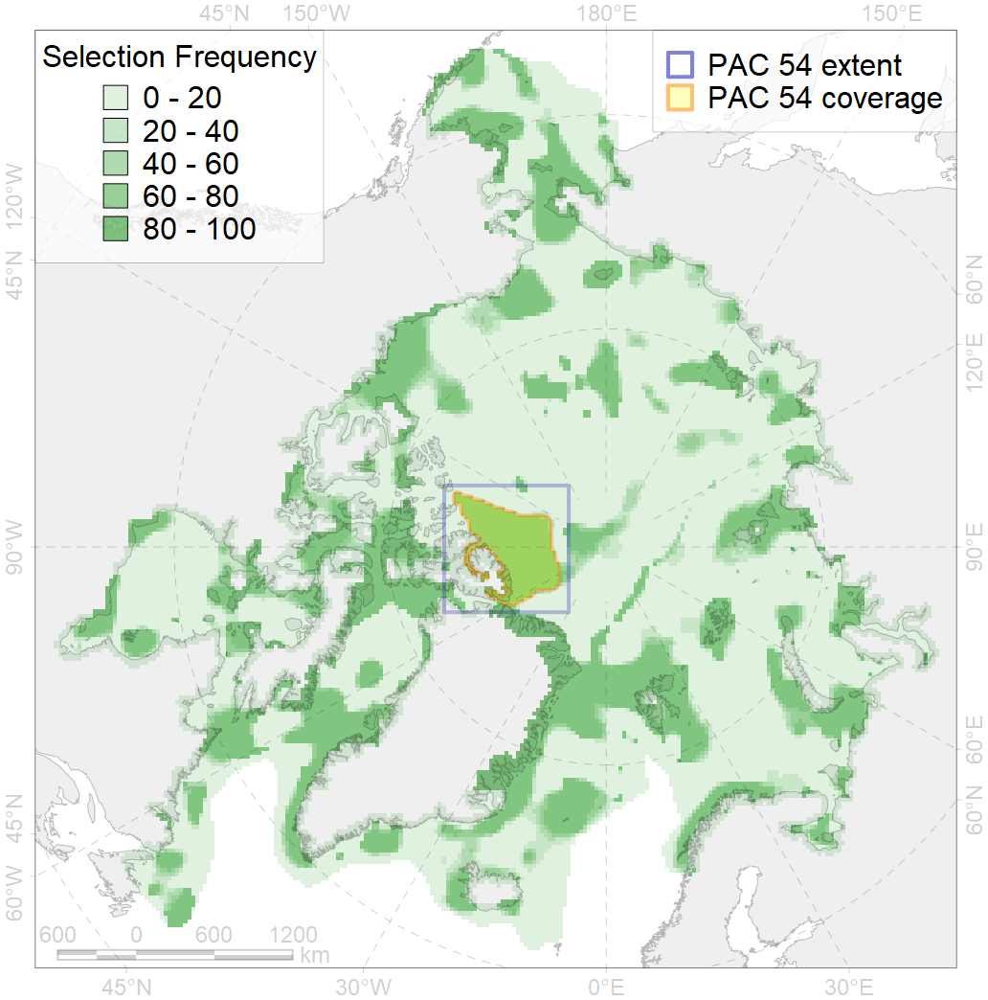
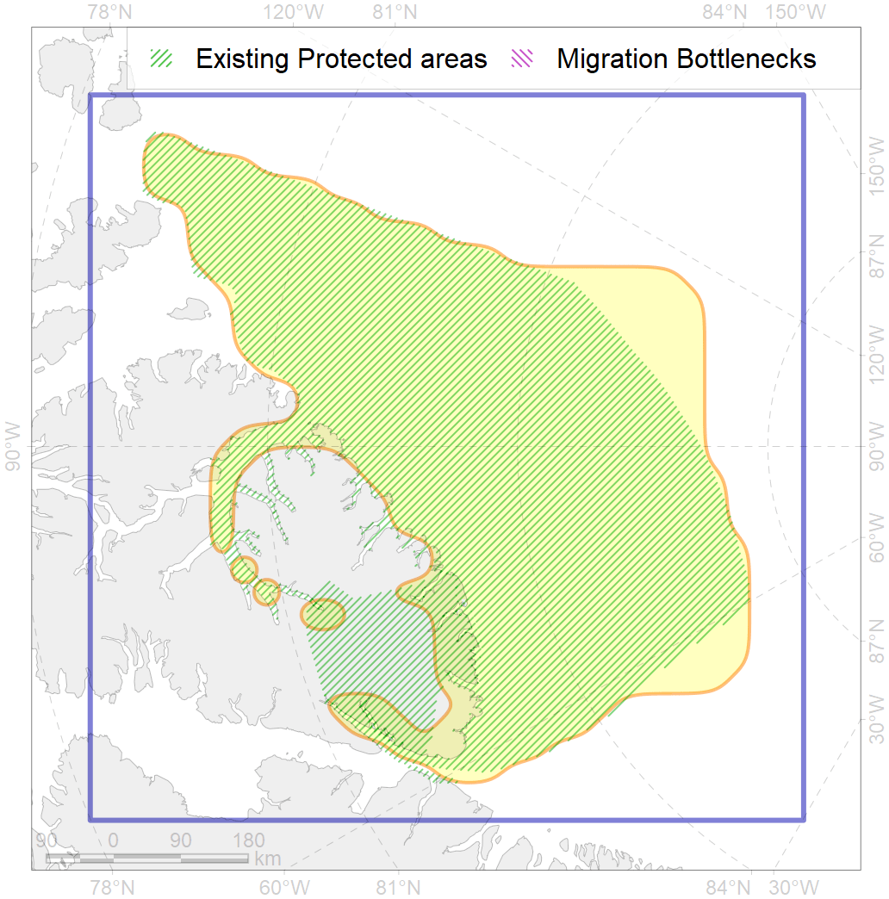

54
For more information regarding this PAC and to conduct custom spatial analysis using the PAC data or any spatial query, please consult Accenter.

0
CFs entirely within the PAC area
4
CFs at least 25% within the PAC area
11
CFs with at least 50% of their target achieved in the PAC
16
CFs with at least half of their target achieved in the PAC
| CF ID | CF Name | Proportion in the PAC | Conservation Target | Contribution to ArcNet Target Achievement | PAC’s Contribution to the Achieved Target |
|---|---|---|---|---|---|
| 7135 | III.1.1.2. Archipelago outer shelf areas of low and median profile | 52.2% | 8.2% | 633.3% | 88.9% |
| 7140 | III.1.2.1. Archipelago north slope | 42.8% | 11.1% | 386.7% | 94.6% |
| 7022 | Canada - North Greenland bathyal region | 35.2% | 9.5% | 369.4% | 66.7% |
| 3051 | Multiyear Ice distribution in September in the Northern Canadian Archipelago LME | 25.5% | 18.0% | 141.3% | 68.1% |
| 7197 | VI.3.2. Terraces | 24.7% | 43.5% | 56.8% | 40.3% |
| 7200 | VI.4. Mendeleev and Alpha Ridges VI.4.1. Plateaus | 22.9% | 50.0% | 43.9% | 43.8% |
| 2014 | Bearded seal whelping areas in the north of the Canadian Archipelago | 20.2% | 24.0% | 82.9% | 53.2% |
| 7133 | III.1. Canadian Arctic Archipelago shelf and margin | 18.6% | 4.2% | 446.6% | 38.9% |
| 7196 | VI.3. Lomonosov Ridge VI.3.1. Plateaus | 17.7% | 50.0% | 34.9% | 34.8% |
| 7199 | VI.3.7. Canyons | 16.9% | 39.1% | 42.4% | 41.3% |
| 7141 | III.1.2.2. Archipelago north slope canyons | 16.3% | 12.1% | 134.8% | 55.3% |
| 7021 | Eastern Canadian Archipelago region | 16.3% | 9.7% | 167.1% | 27.8% |
| 7134 | III.1.1. 1. Canadian Arctic Archipelago shelf | 16.2% | 7.4% | 219.5% | 36.5% |
| 7202 | VI.4.3. Ridges | 14.8% | 100.0% | 14.8% | 14.8% |
| 7014 | Core of Canadian - Greenland Province of Arcto-Atlantic zoogeographical region | 12.6% | 7.4% | 169.5% | 23.5% |
| 6008 | Brent goose (Branta bernicla hrota) Canadian High Arctic breeding&moulting grounds | 10.3% | 24.0% | 40.5% | 20.0% |
| 7181 | VII.3.3. Abyssal hills | 7.2% | 7.2% | 100.6% | 48.6% |
| 9001 | polar bear of the AB (Arctic Basin) subpopulation distribution | 6.7% | 26.4% | 25.2% | 25.0% |
| 3049 | Multiyear Ice distribution in September in the Central Arctic LME | 6.5% | 18.0% | 35.6% | 35.5% |
| 4074 | Fish zoogeography, Arctic Region, High-Arctic Shelf Province, Canadian-Greenland District | 6.3% | 7.4% | 85.5% | 12.6% |
| 7137 | III.1.1.4. Canadian Archipelago glacial troughs | 4.2% | 4.5% | 93.6% | 14.5% |
| 4079 | Fish zoogeography, Arctic Region, Arctic Abyssal Province (Scandian, Central-Arctic and Baffin Deep-sea Districts ) | 4.2% | 4.0% | 102.4% | 17.5% |
| 7180 | VII.3.2. Abyssal plains | 3.1% | 6.5% | 47.6% | 47.0% |
| 4096 | Range of the Glacial eelpout (Lycodes frigidus) | 2.9% | 6.0% | 47.7% | 12.2% |
| 4053 | Range of the Fourhorn Sculpin (Myoxocephalus quadricornis), Euro-Asian populations | 2.6% | 3.0% | 85.4% | 5.1% |
| 4041 | Range of the Polar Cod (Boreogadus saida) | 2.3% | 12.0% | 19.1% | 7.3% |
| 3006 | Fast Ice distribution in the Canadian Archipelago region | 1.8% | 6.0% | 29.7% | 7.0% |
| 7182 | VII.3.4. Abyssal mountains | 1.8% | 16.6% | 10.6% | 8.2% |
| 7177 | VII.2.3. Abyssal hills | 1.1% | 8.6% | 12.3% | 11.5% |